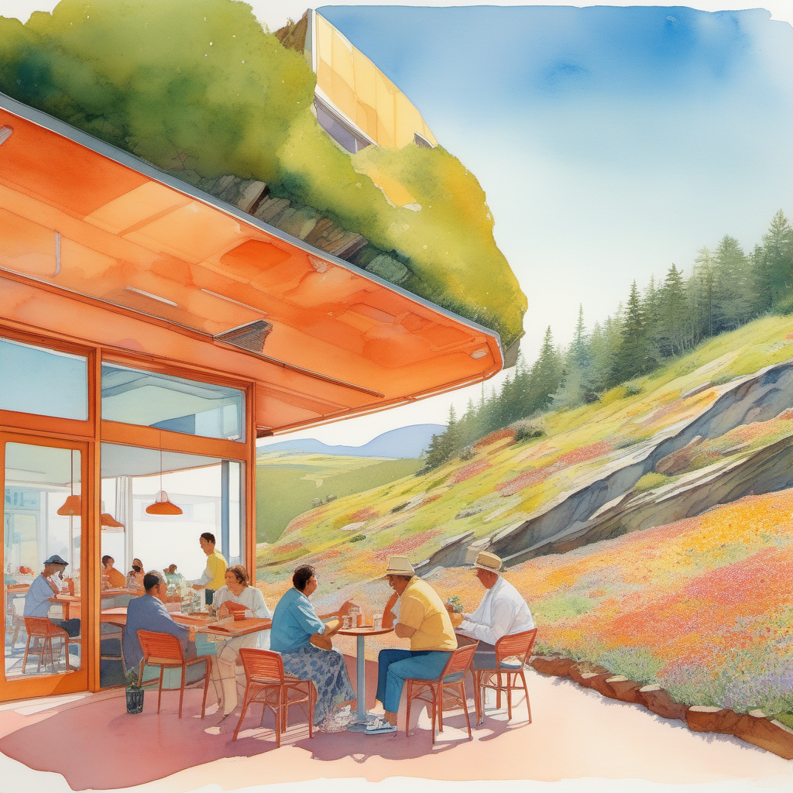
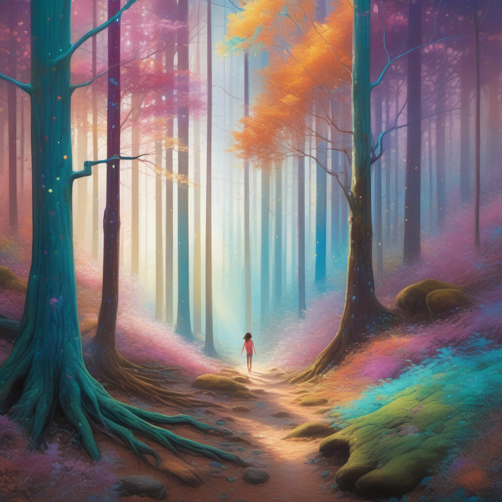
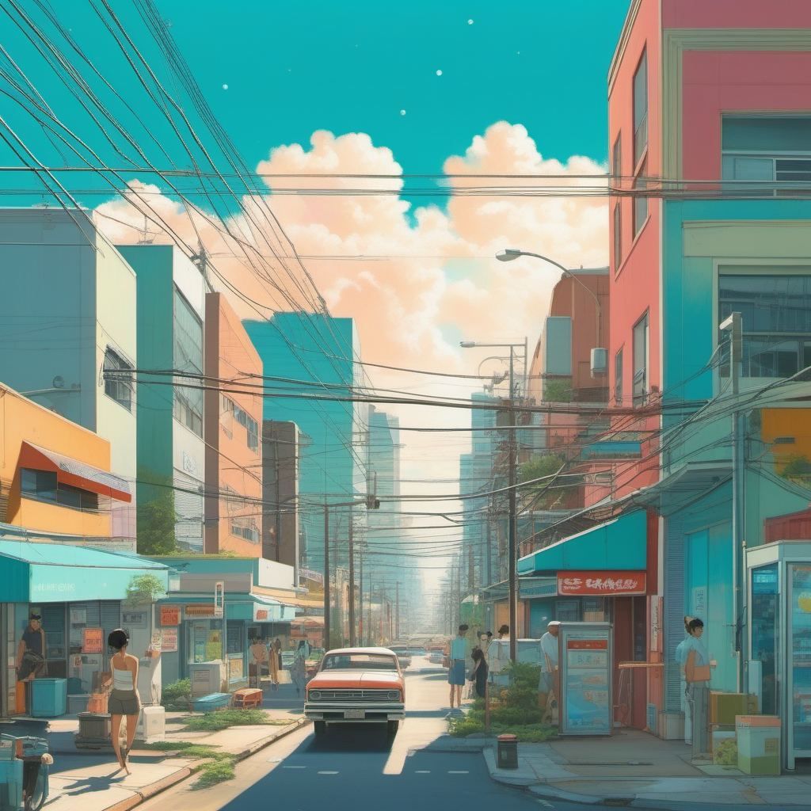
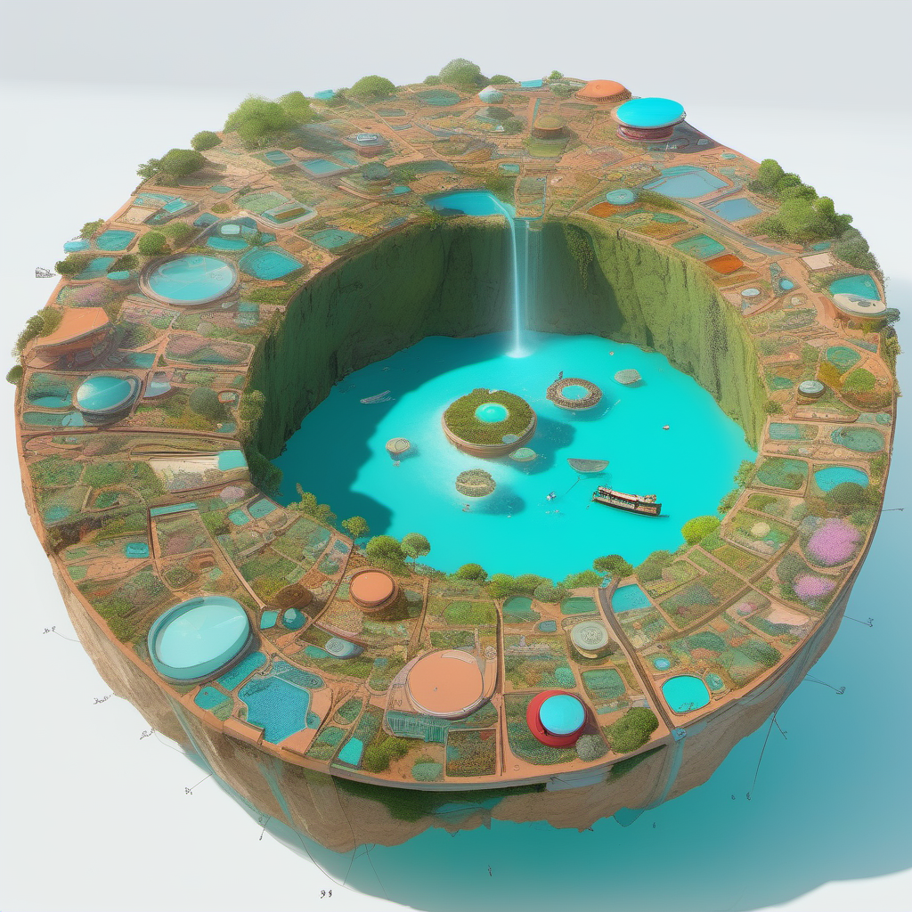
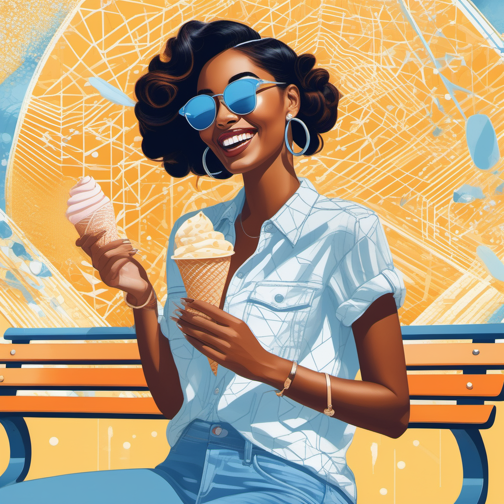
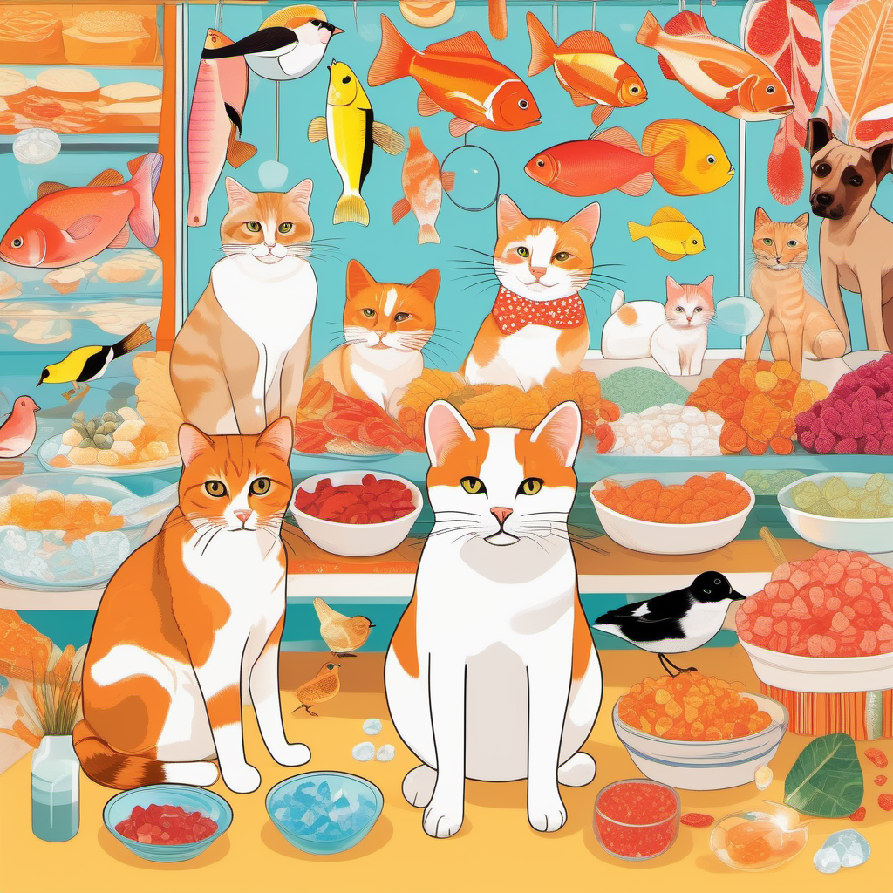
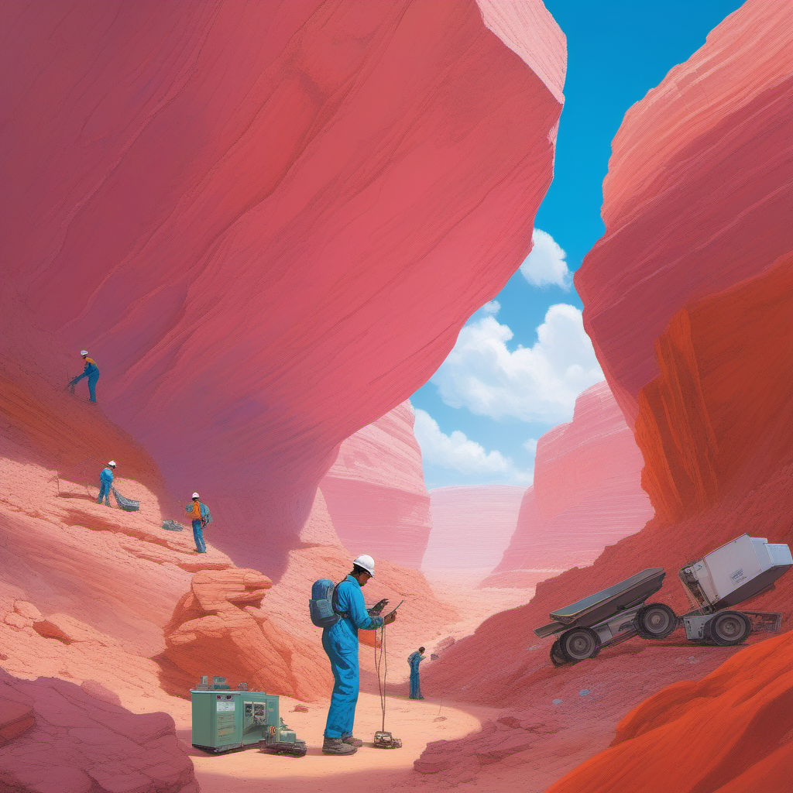
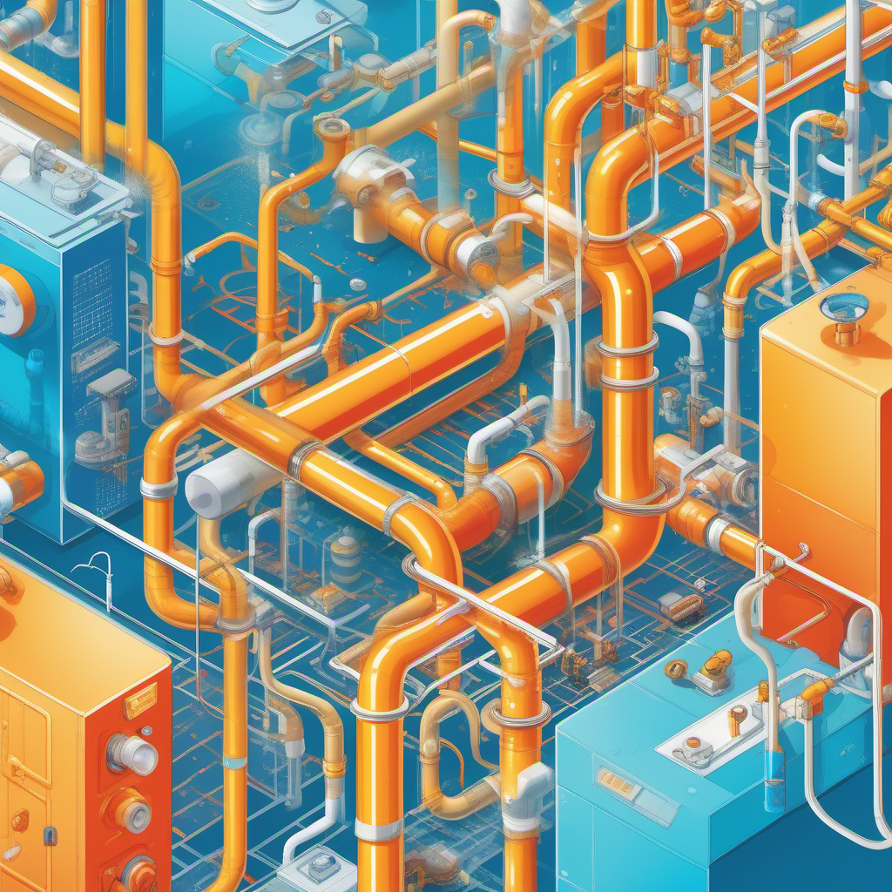
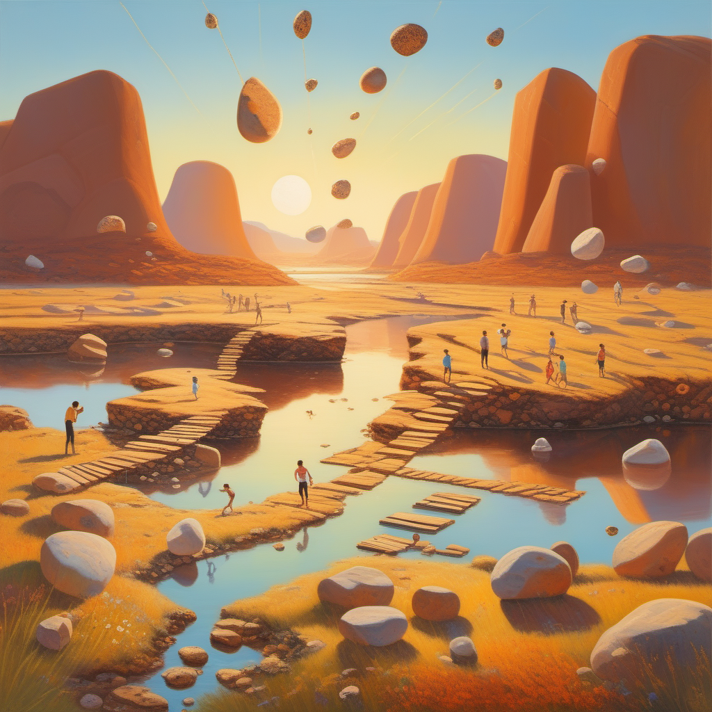
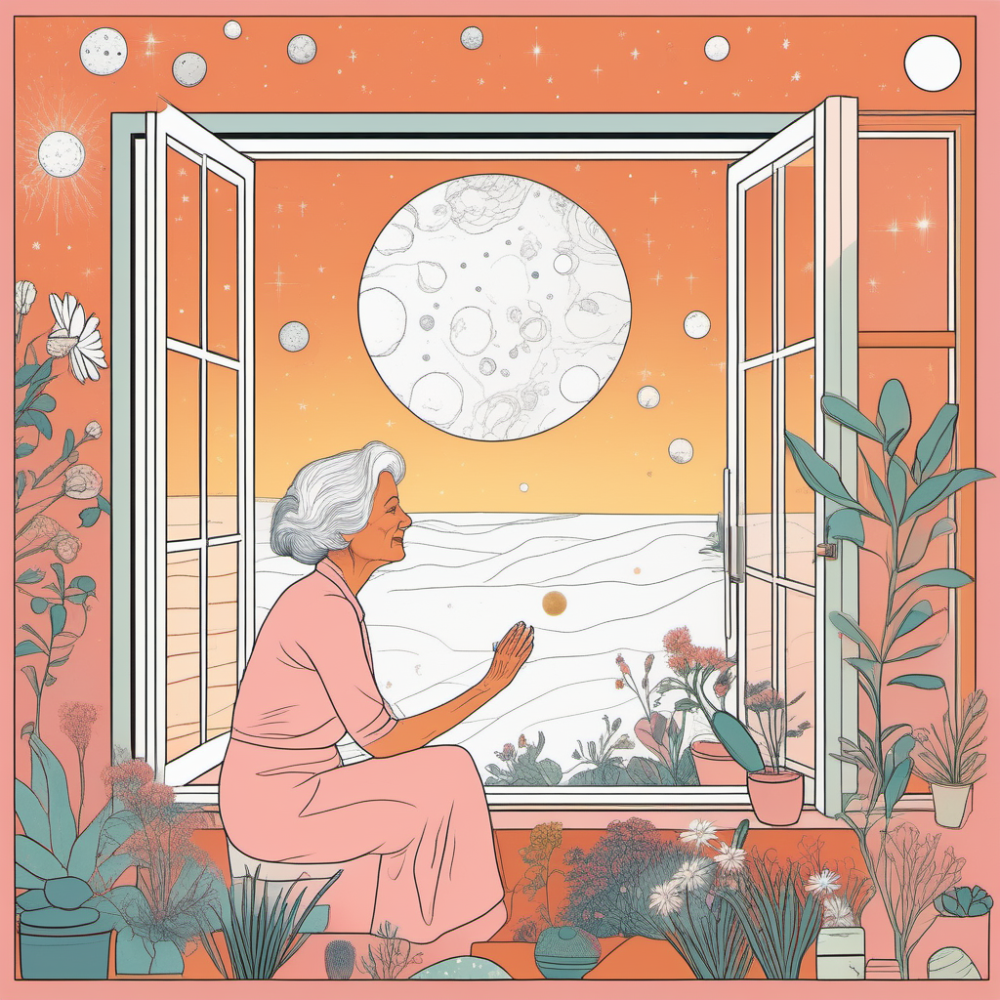

隕石×魔法世界 — 10の視覚方向。設定じゃなくて「絵面」から世界を探る。

巨大隕石に苔と花が生え、その表面にカフェが建ってる。日常の中の異物。

木の幹が途中から結晶に変わる。葉は鉱物の薄板。風で音が鳴る。

空に金と青緑のエネルギーがオーロラ的に流れてる。街角に明日の魔法予報板。

隕石跡のクレーターを中心に街が発展。底には溶け出した隕石の青い湖。

腕をまくると金色の幾何学模様が光る。友達は青。個人差がある。アイス食べながら見せ合う。

片足が琥珀の結晶になった猫が魚屋の台に座ってる。虹の影を落とす結晶の尾羽の鳥。

山肌から珊瑚色に光る鉱脈。カラフルな作業着の鉱夫たち。魔法のインフラを支える労働。

透明な管の中を色とりどりの魔法液が流れる。青=暖房、金=照明、緑=育成。配管工が修理中。

谷に大小の隕石片が浮いてる。ロープ橋で繋がってて洗濯物が干してある。子供が飛び石みたいに跳ぶ。

おばあちゃんが小さな隕石に触ると、頭の周りに宇宙の映像が浮かぶ。孫が戸口から見てる。